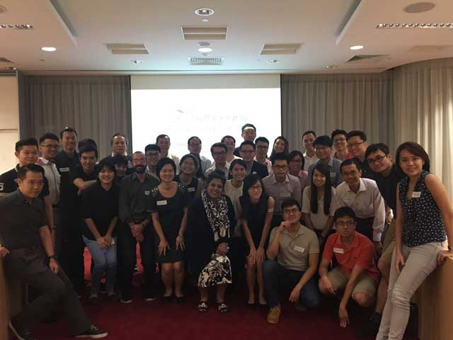
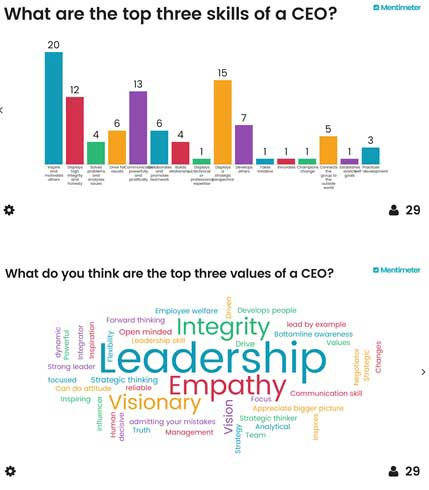
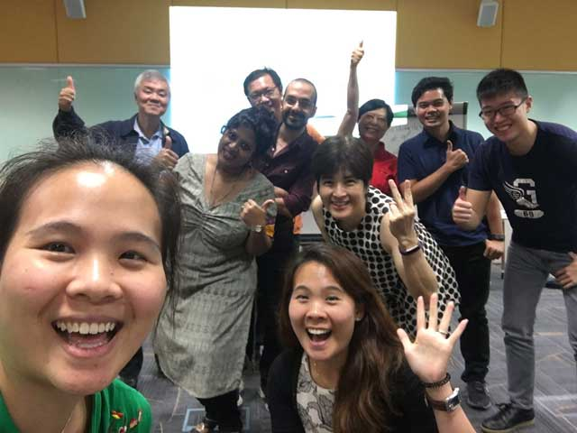
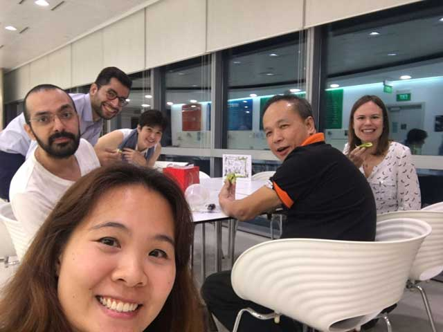
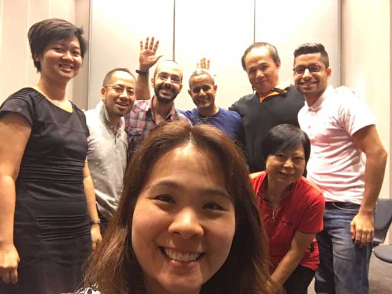
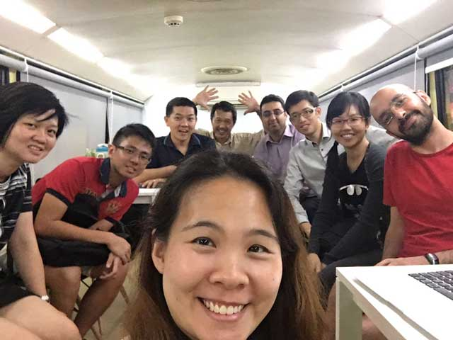

Journey to Being a CEO (Part 2) - Tips for Leaders
Words of wisdom from Francis Yuen (Senior Advisor Singapore Power International)
Written by Shamantha Yan
18 Jan 2017 was an evening of inspiration. We had the honor of having Mr Francis Yuen, Senior Advisor of Singapore Power International, Former CEO Hong Leong Asia and Former President Honeywell, Trane Commercial Systems and Ingersoll Rand, share the evening with us at Growthbean’s Coaching Circle. By the end of the session and after Francis’s sharing of his experience and insights, we each took away nuggets of important information and advice to help us grow in our career. The following are some key takeaways. Enjoy!
Three pillars of work that every CEO engages in
As a CEO, you have to be able to articulate your vision, the progress of the business and what you want to do. You need to make sure you are prepared and on top of things. There are three key areas that a CEO needs to be involved in:
- Develop the Strategic plan
Review and evaluate the company’s portfolio and ensure it is growing and sustainable. Consider also the company’s strength and focus in research and development vis a vis that of competitors. Then, build a strategy to move the company forward, either through new markets, products or strategic thrusts. This could involve a brainstorming session among senior executives to tear down the usual practice, to unlearn and re-learn, or to establish an improvement team that will constantly look for ways to improve things. This could even be having a task team to wreck your business, just so you know how to deal with competitors. Francis recommended the book Blue Ocean Strategy by W. Chan Kim and Renee Mauborgne, and encouraged the audience to constantly question the status quo and find new and different ways of re-packaging or doing with the same set of resources, skills and technology. This would give your company a competitive and first mover advantage. Francis emphasized that innovation is not just about the technology but also the business model, and considering what the customer wants. What delivers most efficiently or cost-efficiently wins.
- Develop the Annual Operating Plan (budget)
This outlines the key areas and plan of what needs to be achieved in a three-year period with rolling horizon. It is important to map out a plan on how to get there. Francis recommended another book, Execution by Larry Bossidy and Ram Charan.
- Have a HR plan
People are key to the company and every organization needs to focus on how to recruit them, develop them, groom and retain them. Succession planning and having a system of rewards is important. It is important to also ensure that you have the right people in the right team who work well together.
With the strategy and plans in place, there needs to be the discipline to ensure that everything is going as per planned. Objectives and milestones need to be set and reviewed at intervals. Budget Reviews should take place every quarter and the Strategic Plan and HR review should be reviewed every six months.
Does one deliberately plan to be CEO?
No. We can only make career choices for ourselves at each stage of our lives, and ensure that we continue to build up our portfolio. If possible, don’t engage in the same type of work. Do something related but not the same. Do not be afraid to try new things or get out of one’s comfort zone. Meet new people and face new challenges. It’d be a good chance to prove to yourself that you can do it. At every step of the way, remember to consider your learning, development, and enrichment. As you climb up the corporate ladder, it is about becoming a business leader, someone who can organize things, assemble a team and help to grow the business.
Having said that, the path to being a CEO requires a lot of on the job training. Business qualifications, a MBA or executive MBA does not qualify anyone to be a CEO. These are just training to exercise the mind. Experience is important – meeting customers and people, and learning to look at things from different perspectives. However, not everyone is cut out to be CEO, but everyone can contribute in different ways.
How does one’s potential get noticed?
People in senior positions assess people all the time. They gauge how excited or passionate individuals are about their work, if they are innovative or a quick thinker. They also tend to ask tough questions, out of their own curiosity and also as a means to assess you. These questions can be about the business, people, the newcomer, or even yesterday’s presentation. Your answer reflects the way you think, and you’d want to be able to answer quickly and sensibly. Seize every opportunity to be seen and seize opportunities in the presence of your boss.
Like in any hiring process, employers do not just look at the individual’s experience. Their skill set and passion, their fire and drive are just as, if not more, important. It is akin to startup investors who are considering which startups to fund. It is not really the plan or the flowery numbers that the investor is concerned with. Rather, it is about the person behind the plan - his passion and commitment, as well as whether he or she knows what to do with the plan or have contingency plans if things do not work out. Things do not usually go as planned, even in big companies. Hence it’s also about how one is able to drive the plan as much as possible.
Managing a Team
There is no one size fits all management leadership style, and one will have to adopt contingency leadership. When working with others, in particular difficult people, always be the one to try to make things work. People want to be respected and know that they are cared for.
If you are taking over a new team, be humble and tell them that you are here to learn and you need their support. Do not try to change everything or fire everyone and assemble your own team. Look out for the individuals who are willing subordinates, leaders and team mates. Work with them to understand the business and then make improvements.
If you have an idea to implement, it is important to convince the team and get their buy-in. If the team gives you their views and well thought through rationale for not implementing it, do take time to assess their points and re-examine and re-evaluate things. You have to get their buy-in or you may have to abandon the idea if necessary. At all times, be prepared to sacrifice, adopt the can-do attitude and show your team your commitment and passion.
Any advice for people who want to start their own business?
Start a company only because there is a need, you have a solution that satisfies the need and it is sustainable with the right people to manage it. Do not start a company just because you want to be CEO.
Secondly, if you have no working experience, do not rush into starting a business unless you see an opportunity that is time sensitive. If people have already done it but you think you can do it better, then you might want to consider working in corporations first to get work and overseas experience. Business school will never prepare you for the real thing.
The biggest test of how committed you are to starting your own business is when you can walk away from a high paying job. Commitment and a belief in the idea would spur you to find ways to push through challenges. However, if you start to have doubts or cannot find like-minded committed people, then don’t start. If the time is not right, or there is no right people to make it successful, it’s better to put it on the backburner.
Thirdly, have an overall game plan. What do you want the company to grow into? Is there an exit plan? Are you in it to see it grow big and look at it with pride or are you in it with the objective of cashing out? Are you able to create value so that people will pay you to buy it over? Are you able to grow it in size? Everyone has different visions and aspirations and you need to know what yours is. Also, remember that it is okay to change plans but not the mission. Plans change as things change and previous ideas may not be relevant anymore.
Views on Failure
Do not get bogged down by failure. Always look forward, not backwards. We all make mistakes, and we just have to reflect on it and learn how to make or do things better. As a CEO, one should also learn to celebrate failure some times. If your staff embodied the values of constant improvement and innovation and attempted to create something which eventually failed, they should be recognized for their passion and commitment. Punishing them would only smother or slaughter motivation and innovation. Then, people would no longer dare to stick their neck out to try and improve things for your organization.
General Advice
- While you are still young, go overseas! Get exposure and enrich your career and experiences.
- Have an open mind. Be positive and optimistic. No idea is a bad idea. Do the impossible. Miracles can take a little longer
- Have stretched goals and work with the 70% rule. For example, try to work more productively with only 70% of the resources. Do more for less or much more for the same. It forces you to think and be innovative.
- Be customer focused as customers are the core of every business
- Give other people an opportunity to be seen as part of your success. If they want the glory, give it to them.
What are your most endearing qualities?
As we can only see ourselves through people’s eyes, Francis saw himself through the good reputation he has in the industry. People see him as a humble, perseverant and people-oriented person with passion to get things done. He is also customer focused and someone who would reach out to all customers to find out their needs and wants, and a team player who would help and support his team.
There is no two CEOs who are alike. Every CEO has different strengths and every individual has to learn, assess their own weakness and find people to complement them.
What does it take to be a CEO (Part 1) - Values & Skills
Words of wisdom from Francis Yuen (Senior Advisor Singapore Power International)
Written by Shamantha Yan
What does it take to be a CEO – Values & Skills
(Journey to being a CEO – Part 1)
Everyone has different expectations of the values and skills of a CEO but there are some key ones that are prized above others. You need to know this if you aspire to be a leader or a CEO.
Growthbeans invited Mr. Francis Yuen, Senior Advisor of Singapore Power International and Former CEO of Hong Leong Asia, to share his “Journey to being a CEO” in a Coaching Circle on 18 January 2017. During the session, we surveyed attendees for the top three skills and values they felt a CEO might possess. Here’s what we found.
|
The top 5 values of a CEO |
|
The top five skills of a CEO |
|
1. Leadership |
|
1. Inspire and motivate others |
|
2. Empathy |
|
2. Displays a strategic perspective |
|
3. Integrity |
|
3. Communicates powerfully and prolifically |
|
4. Visionary |
|
4. Displays high integrity and honesty |
|
5. Strategic Thinking |
|
5. Develops others |
Francis concurred with the survey results and acknowledged that people want leaders they can look up to and trust to make good decisions. As the head of an organization, possessing strategic thinking skills and vision ensure a place and livelihood for employees in a competitive environment. Businesses are grown, customer bases are expanded, and bottom lines are met. CEOs with integrity earn the respect of colleagues by walking the talk and leading by example. Leaders make reasonable demands, being able to do themselves, what they ask of others.
Often an implicitly required skill for senior management, Francis noted that it is important to be able to navigate company politics. Many people can be eyeing your position and looking for opportunities to derail you, so knowing how to manage people and professional relationships is an important skill.
Francis shared his Three Cs of a good leader and CEO.
- Champion: The ability to set the vision, strategy and direction, for people to follow
- Coach: The ability to coach people to get to the goal – putting the right people to the right job and guiding them along
- Cheerleader: The ability to cheer the team on, boost their morale, and inspire and reward them
Stay tuned for more insights!
Are You Living Your Purpose?
Sharing by Joo Hock (based on Buckminister Fuller’s law of Precession), with insights from the group
Edits & Write-up by Shamantha Yan
We need to realize the limitations of looking at things individually, and there is more to gain when looking at it within its context, and as part of a larger system. When we begin to expand the lens through which we view the world, we would begin to realize that the behavior of the whole system is not predictable by looking at each part individually. (Eg, Hydrogen and Oxygen individually have very different properties from Water (H20), which is a combination of both Hydrogen and Oxygen.) The synergy and structural stability created when the parts come together and interact is tremendous.
Life is a process of trial and error. As such we should not be fixated on looking at things from only one perspective. However, people fear failure and mistakes and are more inclined to stick to tried and tested ways; bounded by their perception of reality and assumptions of the things around them. We need to constantly explore and discover the synergy of things around us. As per the law of precession, for every action taken, there will be a side effect arising at 90 degrees to the line of action.
Examples
1. Relating it to honey bees, they spend their lives flying from flower to flower to collect nectar to make honey. They think that’s their purpose but their true (and much larger) purpose as defined by nature is to pollinate the flowers.
2. Relating it to a hammer throw, if we swing and let the hammer go eastwards, it would actually fly towards the north. The throw and impact are 90 degrees apart.
3. Relating to the existence of radio, refrigeration and the Internet, these were initially developed to support war communication and survival. However these have all since become products that are commonly used in the home front (its true purpose).
Relating these to our lives, Buckminister Fuller said that our job was not to make money but to add value to others (make money versus make sense). Instead of making money from money, moving paper from one desk to another, people should focus more on creating value and contributing to the life-support of other people. With that belief, he directed 55 years of his life towards focusing not on making money but on making the world work for total humanity without ecological offenses or disadvantages to anyone. With the right focus, one will be able to seek and receive the required support and funding. Success is not measured by money but the extent to which we make the world a better place.
Precession only happens when one is in motion. Hence, to get things going, one requires commitment and taking initiative. One can anticipate trends, review the problems that people face and design solutions to address these. However, to make it work sufficiently well, there should be a free flow of resources coupled with unbiased judgment, without the influence of politics, power and other agenda.
Application to our lives
1. We need to find a balance. We should not work only for money, and only for yourself and your family. We should also work for the benefit of others. Hence, no matter what job you are in, work out how you can add value in your spare time.
2. When we become fixated on doing something, sometimes we can lose sight of the larger purpose of what we want to achieve or other opportunities that come our way.
3. Learn to take action and make things happen. Don’t let failures or problems hinder you.
4. There is more than one way to achieve our purpose. Don’t be stuck following someone else’s success story believing it is the only way to be fulfilled.
Some Critique
1. If an individual’s basic needs were not met, would he or she still be able to contribute and add value to others? In survival mode, it may not be easy for someone to think of anything else other than making money to make ends meet.
2. Human beings are both rational and emotional as well as selfish beings. It is idealistic to assume that everyone will work harmoniously and collectively in a world with free flow of resources for the betterment of society. This is akin to game theory.
3. Buckminister Fuller seems to be in support of ideal communism but we’ve also seen how such societies eventually began to embrace capitalism.
Recommended books / Reading / Activity from the session
1. Precession excerpt from book Critical Path by Buckminister Fuller
2. A man who believed in ManKind by Buckminister Fuller
Analytics
Sharing by Mohit, with insights from the group
Edits & Write-up by Shamantha Yan
What is Analytics?
It is the analysis and making sense of data to help us understand, explore, examine and uncover things such as behavior patterns for segmentation (Segment, target, positioning) and business purposes. It is the examination of a large amount of data to uncover hidden patterns and insights.
Data analytics is not a new concept. What is different, though, is the advancement of technology and the availability of more data than ever. Hence, the rise of Big Data and the need for more complex and advanced tools beyond excel spreadsheet to handle the data.
Yet, it is important to note that analytics is essentially a tool and it cannot make decisions for you. Data is put through a software with predefined parameters where it undergoes analysis. The data output allows us to zoom in on certain aspects of the data – patterns, outliers, new trends etc
Use of Data Analytics
There are many reasons why people conduct data analytics. Some examples include cost reduction, faster and better data management and profit increase, new product and services so as to remain competitive.
Data analysis was used in the 2011 movie Moneyball, and here is a classic example of how data is used in baseball to build a competitive baseball team. Based on the book by Michael Lewis in 2003, it demonstrated how a revenue-disadvantaged baseball team - Oakland Athletics won almost two-thirds of its games in 2001 by assembling a team based on analysis, evidence and a sabermetric approach. This reduced analytical errors and biases, and was drastically different from the subjective approach of the past. Instead of using one’s instinct or things like swing style and speed to decide the value of a player before buying the player, in-game activity and rigorous statistical analysis about player performance was measured to observe and determine performance consistency. Besides strategic decisions on player choice, data analysis was also applied in tactical decisions and other small but high impact changes such as habits of walking or getting a run.
There are many other used cases of analytics with commonly known ones being stock trading, finance, customer-service in the airline industry, and even shopping. In the case of shopping, our purchasing data – time date, items purchased are all collected and used to predict our next purchases. One other example worth mentioning is multi health system (MHS). They have assessment tools and methods that can analyze an individual’s behavior, and this is used to aid in a wide range of critical decision making processes. This includes helping parole boards determine who is granted release from incarceration. If a prisoner in the USA wants to be granted parole, they would need to obtain the approval / recommendation of MHS. It seems that MHS is able to analyse the prisoner’s behavior every second, and know what they are doing.
Another example is that of driverless cars. Statistics show that two million people die in the USA as a result of car accidents. With driverless cars, it is hoped that this number will be reduced. Big data will be used to control self-driving vehicles. Traffic, environmental data, and data from car sensors will be used to monitor its position, proximity to pedestrians or other drivers, traffic guides, signals and more. This data-driven approach to car transportation is meant to reduce human errors. With this, it is capable of generating even more data for further analysis. However, these are still machines and there are other ethical considerations that we need to concern ourselves with. After all, a self-driving car will not be able to make a decision to speed up if there is an urgent need to rush someone to the hospital. At this point, we then question if machines will overpower our decision-making abilities, our sense of control and us.
We’ve heard examples about how analytics have been used to decide the positioning of items like toothpaste and toothbrushes in the supermarkets to entice us to purchase both. This eventually led to the bundling of both items together. To what extent are we being influenced, persuaded and manipulated by the data output and to what extent are consumers able to be more mindful and not fall into purchasing traps?
What does Analytics mean to us?
For many of us, data is a double-edged sword. It empowers us and yet can be intimidating in its own right. It seems that analytics attempts to find a pattern to things. However, when it comes to predicting human behavior, it is undeniable that human behavior is unpredictable and we don’t always behave according to the statistics. Our behavior may also not be the best representative of the different thoughts and considerations that goes through our minds. To date, we still have very little knowledge of our brain. But we know that our thoughts show itself in the form of behavior. Just like behaviourism in psychology, analytics is the best tool that we have to make sense of human behavior and thoughts. Plenty of work is ongoing in this arena with IBM Watsons analytics.
On the other hand, what causes analytics to fail is the inaccuracy, elements of uncertainty and that it may not have included all factors into the equation. However, do we need 100% accuracy in all instances? Many of us just need some assistance with the data to guide us in decision-making. For example, the identification of an ideal job position to apply for, or the amount that a comedian (in Mumbai) should get paid in terms of the entertainment merit index.
Analytics remain a tool for us to use, and we cannot rely merely on it to make decisions. Some say that analytics provide people with a competitive advantage. However if everyone is now on an equal playing field, how do we continue to differentiate ourselves? In the end, it is about the way we make sense of and use the data as in the case of Alpha House’s failure versus House of Card’s success. Both drama series were created using analytics. In Alpha House’s case, they based it merely on the data and patterns of what people like to watch. In the case of House of Cards, it was not just based on that. Human experience was also key.
So, is there a need to fear Analytics? We only fear what we don’t know. Do we know what data is being collected and what companies do with the data?
Recommended books / Reading / Activity from the session:
1. Moneyball: The Art of Winning an Unfair Game by Michael Lewis Themes explored in the book: Insiders vs. outsiders (established traditionalists vs. upstart proponents of sabermetrics), the democratization of information causing a flattening of hierarchies, and the ruthless drive for efficiency that capitalism demands.
2. Fooled by randomness: The Hidden Role of Chance in the Markets and in Life by Nassim Nicholas Taleb This is regarding the Black Swan Theory which shows us the possibility to expect the impossible.
Finding what motivates you at work!
Sharing by Shamantha, with insights from the group
Edits & Write-up by Shamantha Yan
Overview
We all have dreams, desires and an ever-growing wish list of things we want to do in this lifetime. How far are we from achieving them? Like everything else that we work towards, do we stop to think about what it is we are doing today that can help us reach these dreams? Are these dreams of ours a source of motivation for us at work? Or are there other underlying factors that play a bigger role in our working lives?
Types of People at Work
Work is such a big part of our everyday life. It’s our first life, our second home – and one that we share with so many different types of people. Have you ever stopped to think about these people that we see in our workplace everyday? They are just like us, working everyday, but each a different type. How many of the following describes who we tend to be at work? How many resemble someone you know? Why are some people the way they are at work? What drives them? Why are there distinct differences? Why are some so happy at work, and yet others not?
Animal-like
- Cats – people who look down on others
- Giraffe – looks far (but may not always be the right way)
- Birds – Free-spirited
- Butterfly – very sociable
- Chicken – one task/track mind
- Eagle – does not micromanage, gives others a chance to try and make mistake
- Narrow-minded people who don’t like to think out of the box
Others
- Fun loving
- Enthusiastic, driven
- Willing to help others
- Competitive
- High Energy
- Bureaucratic, follow rules
- Whiners, complainers
- Aggressive, vindictive, hateful
- Jaded, cynical
- Conscientious, head-down work hard
- ‘Just-a-job’
- Stressed
- Efficient and focused
Could this be explained by motivations? What is motivation? It is the reason/reasons for behaving or acting in a certain way. We ask ourselves, what gives us reason(s) to work or want to work?
Why do we work?
We work for a multitude of reasons, and this reason could differ for each individual. We could work for survival, to maintain a certain kind of lifestyle, for people or relationships, or self-fulfilment. When some of these reasons are not fulfilled, it comes as no surprise why people may choose to leave their jobs for something and somewhere hopefully better. Yet, if we compare this to career switch decisions made by individuals in 2015, these reasons alone do not seem to fully explain why people leave their jobs.
Reasons we work
- Something to do / boredom
- Pay bills, have money
- Sense of belonging
- Sense of being useful / being able to contribute(self-fulfilment)
- Impact others
- Pursue passion
- To have done something
- To be good at something to impact lives
- To be financially ready to have freedom
- To push self outside comfort zone
- To solve problems
- To work with and develop others
- Because everyone is doing it
- To be respected and not viewed ‘lazy’
- Because we fear the bad things of not working
- To be in the flow
- Because we love it
- To invest in oneself
We may all have some reasons or something we are working towards and for. However, after this first set of considerations and conditions have been met, other factors do actually kick in. These other factors can either facilitate or pose as an obstacle to us in striving for the final outcome. It can influence how we feel about the work and how we perform at work, giving us more or less reasons to do the work. It turns out that there are two other questions we need ask to dig deeper.
What is the nature of work vis a vis our working style? What is the environment in which we prefer to work?
Have you ever stopped to think about how you tend to work or prefer to work? Have you also reflected on the different things at work that keeps you engaged? What about the context and environment in which you were at your best? What was it like? What was the nature of your job? What changed? What were the organization’s expectations of you? What were your colleagues like? What did you celebrate? What were you proud of? If we do some soul searching and reflection, we might see some emerging patterns that relates to our work preferences and inclinations such that we say we are in the flow of things when these are aligned with our work. Conversely, what if we apply the same questions to the activities that we simply cannot bear to do? What do we observe? And for the jobs that we left, what was the final reason we gave to ourselves for leaving?
You might notice that we are all very different. If our reasons for work started off being very different, and we add further differences to it – such as the inclinations and preferred circumstances that keep us going, you can start to understand why we see different types of people at work. Some of us prefer autonomy, freedom and flexibility while others prefer structure, rules and procedures. Some of us love work diversity and constantly new challenges. Yet others prefer something more stable and predictable, and possibly even something more routine. Some of us take pride in being able to do something that no one else can do and being appreciated and recognized for it. Yet, some of us care more for the rewards. Some love to be with people, some just want to focus on the task. Some care about the company’s vision and mission while others care more for the company culture.
What type of person are you at work?
What do you care about?
Is your work environment and nature of work in alignment with your working style and preferences?
Recommended books / Reading / Activity from the session:
- Quiet: The Power of Introverts in a World That Can't Stop Talking by Susan Cain
https://www.ted.com/talks/susan_cain_the_power_of_introverts
http://www.quietrev.com/wp-content/uploads/2015/05/QR_ebookMay8-2015.pdf
At least one-third of the people we know are introverts. They are the ones who prefer listening to speaking; who innovate and create but dislike self-promotion; who favor working on their own over working in teams. It is to introverts—Rosa Parks, Chopin, Dr. Seuss, Steve Wozniak—that we owe many of the great contributions to society.
- Grunch of Giants by R. Buckminster Fuller
http://www.bobbygill.co.uk/grunch-of-giants-by-r-buckminster-fuller-pdf/
http://www.arvindguptatoys.com/arvindgupta/bucky-giants.pdf
Buckminster Fuller takes on the gigantic corporate megaliths that exert increasing control over every aspect of daily life. In the form of a modern allegory, he traces the evolution of these multinational giants from the post-World War II military-industrial complex to the current army of abstract legal entities known as the corporate world.
- The One Thing: The Surprisingly Simple Truth Behind Extraordinary Results by Gary Keller and Jay Papasan
The One Thing explains the success habit to overcome the six lies that block our success, beat the seven thieves that steal time, and leverage the laws of purpose, priority, and productivity.
- Jonathan Livingston Seagull: The New Complete edition by Richard Bach
Jonathan Seagull is a story for one who knows that somewhere there’s a higher way of living
than scuffing the tracks of others, someone who yearns to fly the way their own heart yearns to fly.
How To Make A Difference?
Sharing by S. M. Ali Fateminia, with insights from the group
Edits & Write-up by Shamantha Yan
Overview
We are born, filled with curiosity. Our desire to know drives us to experience, to touch, to taste and to do! We succeed or fail, get encouraged or scolded, and so we learn, modify, and sadly we develop beliefs. Time passes by, we get immersed in the routine of everyday life. Year after year, we practice the unfounded beliefs, the prison build by our own hands. Until we even forget that we "can" do what we "should" do.
To be a sun, or to be a shadow,
To be shining or to follow!
It is simply a matter of choice.
This session will not be a presentation or a lecture, but instead it will be a series of questions that we, together, will ponder upon. We are going to explore and learn "together", about the topic of "How to make a difference?"
Introduction
How do we learn something and remember it forever?
When were you most passionate about learning?
In most instances, it could be when you were in search for an answer and the person who had the answer made you think, create your own thoughts and triggered greater desire for more information. Hence, it is with the same approach that this session was conducted – to engage everyone in a discussion to extract information for learning.
Defining Difference
Before we can begin our discussion about How to Make A Difference, we need to understand that we all understand it the same way. Difference refers to a change in the routine (following what is usually done) of one’s / others’ life in an ethical manner
Why do we need to make a Difference?
There are many reasons to why people make a difference. It could be because they:
- are bored
- hold on to a different set of ideologies
- have new or better ideas to bring out change in doing the same work
- want to be the best of themselves
- want to do it for a social purpose
- want to make life better for others
- want to solve a need
- have a change of perspective
Making a difference can take on different approaches. For some, they begin with the end in mind. They may question their purpose on earth and the difference that they can make given what they have. For others, it is part of the journey. They make a difference when they spot the opportunity to do so. Yet, a difference can also take place without our realization. As we transition through the different stages of our lives, we are changing our routine. Many things such as our choice of friends, our experience, change of perspectives and reflection can influence it. Even when we decide to switch jobs or change the way we approach matters, we have chosen to make a difference in our own lives.
The quality of life we have or the impact we have made is measured not by the amount we earn but by the amount of change we make. All of us have our unique strengths and talents, which we can use to make a difference. Joseph Schooling made a difference with his, and his achievements gave people hope, and showed them what perseverance, grit and resilience meant.
Making a difference does not have to be on such a large scale. It can be small difference that we make, like reflecting on our experience and the way things have been done so far. Then, questioning what we do not enjoy about it and what we can change to make the experience a better one for ourselves, and for others involved. In the instance of learning, students prefer to be engaged in a discussion as it pikes their interest. The change in student engagement can lead to greater learning and make for a more meaningful teacher-student relationship.
We are all empowered to make a difference. However, sometimes we tend to think of the world as a box with boundaries. We see it as something that has been set for us and we simply follow the rules and embark on the common trajectory of life. Have we stopped to question who it was that made all these rules and boundaries? People who are just like us have made them. So let us not allow these to limit our abilities to create our own impact and change or shape the boundaries to make our lives positively different.
Tools to Make a Difference
It is true that we can only give what we have, but we have plenty to give. This extends beyond material goods to knowledge, physical strength, words, love and more. We can also acquire things to give to make the difference that we want. For example, a lady discovered her ability to sense a change in behavior. She detected depression symptoms in people but was not adequately equipped to help. Thus she took up a counseling diploma.
Different tools that can help make a difference include:
- Observation: Ability to look for problems / patterns where we can make a difference.
- Need: A need can be a trigger for change
- Empathy: Ability to understand and see things from other people’s perspective to form the basis of change in their lives
- Knowledge
- Self confidence, self esteem
- Resilience, perseverance, will power
- Passion, desire, vision, strategy
- Discipline: To make things happen, time, effort and habit are often ingredients for success
- Patience
- Commitment
- Ambition, ideas, plan and a belief in success.
Resilience does not come with rationality and credibility. It comes with passion. With that, each failure is not considered a failure but a feedback for constant improvement. For these, we have plenty to learn from the likes of Thomas Edison and Steve Jobs, amongst many others.
The 5 Things That You Must Have to Make a Difference
- Commitment
- Passion (includes knowledge)
- Ambition
- Creativity – freedom of thought brings creativity
- Presentation skills – to show what you created to others
Today is hard. Tomorrow is harder but the day after is beautiful. Think big and start small.
Methods To Overcome Our Fears
Sharing by Charlene, with insights from the group
Edits & Write-up by Shamantha Yan
Overview
Fear can be further understood as biological fear and learned fear, where the latter results in negative thoughts that are amplified in their minds. Some common fears that we have include:
- Failure: Usually for matters that are important for ourselves and caused by our high expectation of self
- Judgment: In Maslow’s hierarchy of needs, after we have met our lower level needs (physiological and security), the need for love, a sense of belonging and esteem then kicks in. It is that desire to belong and to have a sense of self worth that makes us more conscious of what people think of us.
- Loss
- Height: Underlying this is the fear of falling. For some of us, this could have been triggered by a prior experience such as falling down a flight of stairs when we were younger.
- Darkness/Unknown: We all like to be in control of events and situations. That could explain why when thrown into darkness or the unknown, the uncertainty paralyses us. In such instances, it really doesn’t help to have a vivid imagination. Our imaginations, powered by the things that we read, watch and hear can create plenty of unreal scary thoughts.
- Sickness/Death: We fear this on two accounts – the attachment we have with our loved ones which is closely linked to the fear of losing them, and the uncertainty of what lies beyond this life.
Tips to Overcome Fear based on Personal Experience
Fear is not selfish, so everyone gets to have a taste of it in different ways. J How do we tackle it you may ask? In some sense, it is really a choice and a matter of perspective. We can continue to fear Fear itself, OR look at Fear in the face and thank it for giving us the opportunity to meet courage.
- Face Fear, Embrace it
If we take flight from it, it’d only come back to haunt us later. Sometimes, fear is derived from a past experience. Face it, recognize it and accept it. Fight it with confidence. Usually, that comes with sufficient reflection (what happened, why did it happen, how can we prevent it), preparation, homework and research. Whatever that doesn’t kill us will make us stronger.
- Oppose Fear
Resist fear and it’d flee. Don’t give fear a chance to manifest in our minds. Fear exists in our minds because we allow it to. Question its existence and move that emotion towards the sphere of logic. What is the worst thing that can happen? Find the underlying reason using the so-what strategy. If we ask ourselves so-what many times; that can help us question the basis of our fear. That will then help us address it at the root.
- Remain undaunted in the face of fear
We can’t entirely chase the butterflies away but we can learn to manage it by keeping calm and being at peace with ourselves. Meditation and focus helps with this. Get the butterflies aligned to fly in one direction out of our stomach.
- Get Assurance
We don’t have to face fear alone. We can always seek support from family, friends or like-minded individuals. It’s important to ensure that we cultivate the right relationships to provide us with emotional support.
- Guts
Somewhere deep down in us, we have a sense of belief plus a tinge of impulse that has been masked. Try and find the inner motivation or underlying reason to push yourself through. Summon the guts to just do it!
- Endurance
Fear will not be defeated overnight, but no battle is won without a fight. Sometimes it boils down to endurance and who can hold it out for a longer period. So, don’t give up and just keep holding on! Practice makes perfect.
- Have greater belief in ourselves
It is true that we like to have control and full certainty of situations. However that will not always happen. There are too many factors at play and we can only make the best out of each situation. We are usually our only obstacle and enemy and we may beat ourselves up thinking we are not able to handle it. Don’t underestimate yourself, because if not you, then who?
- Reframe the situation, change your perspective
Our reaction, behavior and response are usually shaped by our thoughts. If we think we are afraid, that choice of words will tell our mind how to react. So think differently! Instead of focusing on all the negative things, start to look for the positives! Or, frame the negative thoughts into questions - “How might we prevent that?” Doing so will lay the foundation for a solution-driven approach. It is sometimes easier to deal with logic than with emotions.
- Thinking of Fear as a necessary evil
Fear is not a bad thing. It can be instinctive fear that helps ensure our survival. Fear can create stress, which induces action on our part to help us through danger. It can also help us to measure the risk involved so as to make better and safer decisions.
- What you fear: Perception or Reality
We fear because we tend to imagine all the worst-case scenarios happening - What if this happens and I can’t handle it? What if that happens and we don’t have a back-up plan? What if people laugh at me? If we allow that to manifest in our mind, fear can paralyze us and prevent us from taking the next step. Is this what you really want? Begin with the end in mind, and ask yourself what it is you truly wish to achieve. There can be plenty to fear, but don’t let that hinder your progress. Instead, ask yourself what is the likelihood of that happening, and perhaps focus on preparing yourself for such instances (risk management). If your fear does indeed materialize, just focus on finding a way around it.
- Remember our Success
Bad news and bad events attract us. We always tend to remember every negative event in our lives. How about starting to remember our success and what it feels like? There could be that one instance when you did really well in something, which you were so fearful of. Recall what you did, how you did it and what it felt like. Capture and recreate that mental image of success. Don’t underestimate the power of visualization. That could give you strength and confidence.
- Work on our strengths
We are not doing ourselves sufficient justice if we continue to work on our weakness instead of our strengths. Work through our strengths to overcome the shortfalls of our weakness.
- Picture Fear as an object
Picture fear as an object. Decolorize it and imagine it shrinking. Alternatively, frame fear between your index and thumb of both hands. Then as you move it away from you, make a ‘woosh’ sound. Realise that fear was amplified in our minds by us and we can reduce it. Don’t give fear too much attention. Fear is not as big as you imagine it to be. Now, you can take control of it.
Recommended books / Reading from the session:
- Psycho Cybernetics by Maxwell Maltz
(http://mastertext.spb.ru/pics/Psycho-Cybernetics.pdf)
This is about a plastic surgeon who helped people change their mentality and adopt more
positive views of themselves.
Always be Starting and Always be Closing!
Sharing by Lynette, with insights from the group
Edits & Write-up by Shamantha Yan
Sales Tips Based on Personal Experience:
- Be diplomatic, not tactless
Where do we draw the line and just how far should we go when managing demanding clients? It is important to remember that every action draws a reaction. How you react would most certainly shape the other party’s reaction. Do consider the consequences of your action before you respond, and ensure that you are prepared for it. Imagine how you would react if a sales person were to be rude to you. Do choose your attitude because you do have a choice! It is possible to be nice and firm at the same time. However, when you go the extra mile for your clients, they might be more inclined to pledge their loyalty to you. Interestingly, such instances may allow you to shine and differentiate yourself from your competitors. Again, do consider it carefully too as some things you do could be setting precedence.
- There is a fine line between being friendly and frivolous
Two persons approach you. One of them is your good friend; the other is someone you’ve just met. Both recommend an item to you for purchase. Who would you buy it from and why? It is not uncommon to find that people would likely buy something if it were a recommendation from a trusted friend. People tend to buy from people they trust. The idea is that your friend will likely have your interest at heart. Selling is about relationship building, and a genuine interest to provide value. Otherwise, people will usually be able to sniff out your intentions from a mile away. It is very important to be real, sincere and not to lead your client on.
- Sorry seems to be the easiest word?
Apologizing to others unnecessarily immediate tilts the power balance, and can lead to people taking advantage of this. This sets you up for an unequal and uncomfortable relationship with your clients. Do apologize only if it is really your fault. In addition, do bear in mind that ‘sorry’ is the last thing that people usually want to hear when things go wrong. They would much prefer to hear your rectification plans. So, do rectify the problem immediately.
- Be proactive but not a pest
Whether it is a cold-call, follow-up call, a call to update or seek approval for something, is there a magic number of times you can or should call your clients? Put yourself in the shoes of your client, or recall the last instance when you felt annoyed with a salesperson who called you one too many times, or someone who called you and you thought that there could have been a better approach. What was it? If your client is not picking up the phone, what alternatives or creative methods are there that you can take to approach the situation? Taking the perspective of the client can be helpful, but always remember not to pester or stalk because you might end up losing a client.
- Authenticity leads to genuine friendship
The ideal situation is when you manage to convert all your clients to your friends. That’s when you establish chemistry with your clients, are able to engage in true and deeper conversations with them, and have each other in mind when there are exciting or new opportunities that might be beneficial to the other. It always helps to have an extra pair of ears and eyes keeping a look out for opportunities!
- Word of mouth is the most effective marketing
Social media is a great tool to help you increase your presence in the market. However, nothing beats the loyalty and love that your clients accord you when they voluntarily spread good word about you. That kind of testimonial immediately enhances your credibility and quality. It is a completely different ball game when prospective clients are requesting for your service and you trying to convince them why they should use your services. New clients can come from the same company!
Cold Calling: Managing Your Expectations & Other Tips:
- Rejection is normal. Don’t take it personally.
- Expect people to say ‘Don’t Call Me Back’, ‘Call me back’ but don’t pick up the phone when you do
- Do formulate common replies to address common answers
- Do follow up and make sure you call back as per the scheduled time
- Do establish a proper tracking system
- It’s okay to follow the script but try to personalize it
- If you do not have a database to begin with, you might want to begin with selecting an industry
- It is important to offer the benefit statement to indicate how you can help the client and how you are better than others
- Be fast and loud enough in speech and do not be boring
- Ask questions as it gives you insights
Insights / Reflections:
- Never be afraid of cold calls. The more you do the better you become the word " no " is not personal
- Persistence is the word! It is also a lot about relationship building and being authentic. But that means really needing to understand people
- There are so many aspects to sales. Relationship management with clients to maintain sales is one of them. Client retention is extremely important! Other things to consider include cold-calling, networking, making the connection, building the relationship, sales techniques, the art of listening and understanding needs, personal branding, developing your style, corporate versus consumer sales strategy et
- Knowing the tactics of "sales" is somehow necessary for most people as we are all selling
something to someone. It could be a product, but it can also be our thoughts and ideas.
Recommended books / Reading from the session:
- The 5 Levels of Leadership - John C Maxwell
- How to sell your way through life - Napolean Hill
- Willpower – Kelly McGonigal
- See You At The Top – Zig Ziglar